Membres de l'equip en Actiu
| Nom Complet | Sobrenom | Nacionalitat | Edat | Descripció |
|---|---|---|---|---|
| Albert Dreijer | Dive | Danès | 18 | Fundador de l'equip, pilot de iRacing, dissenyador de lliveries i fanàtic d'Aston Martin Racing |
| Callum Blyth | Blyth | Anglès | 22 | Cofundador de l'equip i pilot de ACC |
| Benjamin Kloss | Gamer Xtreme | Alemany | 19 | Cofundador de l'equip i pilot de ACC |
| Kyle Hardaway | Chukio | Americà | 22 | Cofundador de l'equip, pilot de iRacing i ACC, dissenyador de lliveries i spotter |
| Marc Mas | Marc | Espanyol | 18 | Organitzador d'horaris i pilot semi-profesional |
| Riccardo Busani | Rokiow | Italià | 16 | Pilot,tastador de parets i doblegador de columnes de direcció |
| Gosha Vershinin | Rowa | Rus | 18 | Pilot semi-profesional |
| Chris Davis | Chris | Anglès | 25 | Pilot Profesional (Taula de resultats) |
| Benjamin Eley | Threadus | Anglès | 22 | Pilot Amateur, jugador semi-profesional de Counter-Strike 2 |
| Max Threadgil | Max | Anglès | 16 | Pilot Novell i jugador amateur de Counter-Strike 2 |
| Raihan Chowdhury | RTA | Bangladeshi | 16 | Pilot novell |
Antics pilots de l'equip
| Afonso |
| Kris |
| Kyle |
| Maikel |
| Mark Kerkhoff |
| Maxime Coschiera |
| Srinjay Das |
| Ben Gilroy |
| Ryan Cheshire |
| Will Gossel |
Resultats
| Simulador | Data | Event | Posició | Enllaç del directe |
|---|---|---|---|---|
| Assetto Corsa Competizione | 28-29/06/2025 | 24 Hores de Nordschleife | P5/50 | Part 1 Part 2 Part 3 |
| iRacing | 20/07/2025 | Carrera GT de Resistència a Virginia | P16/80 | PdV Marc Mas |
| iRacing | 20/07/2025 | Carrera per la Cura del càncer de MS Charity Society a Lime Rock Park | P4/50 | PdV Marc Mas |
| iRacing | 23/08/2025 | Tour de Resistència a Virginia (6hr) | P2/80 | Cotxe 04 |
| iRacing | 06/09/2025 | Battle on the Bricks (6 hores de Indianapolis) | P1/50 | Cotxe 04 Cotxe 05 |
| iRacing | 04/10/2025 | Petit Le Mans (10 hores de Road Atlanta) (LMP2) | P2/50, P9/50 | Cotxe 04 Cotxe 05 |
Lliveries
| Simulador | Cotxe | Imatges |
|---|---|---|
| Assetto Corsa Competizione | Mercedes AMG GT3 | 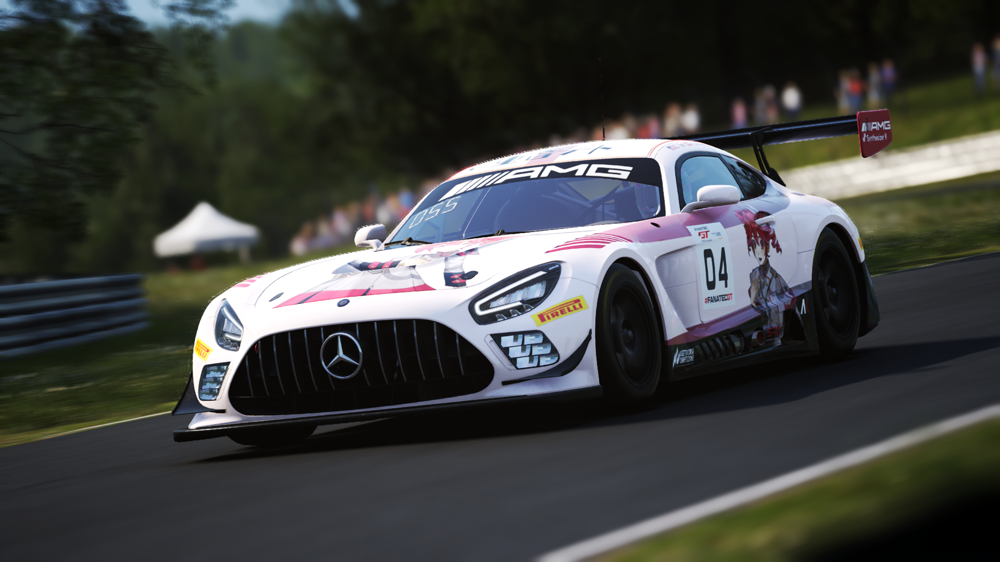 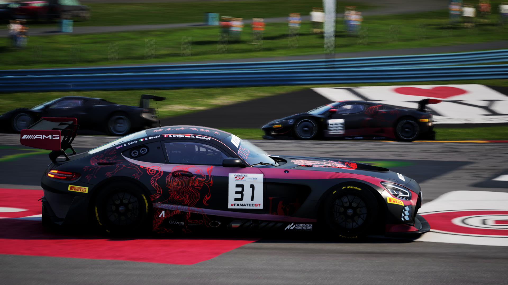 |
| Assetto Corsa Competizione | Ferrari 296 GT3 | 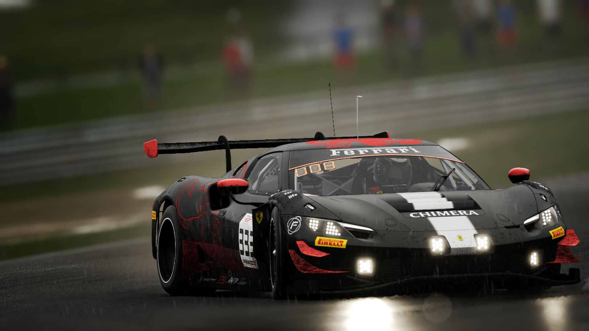 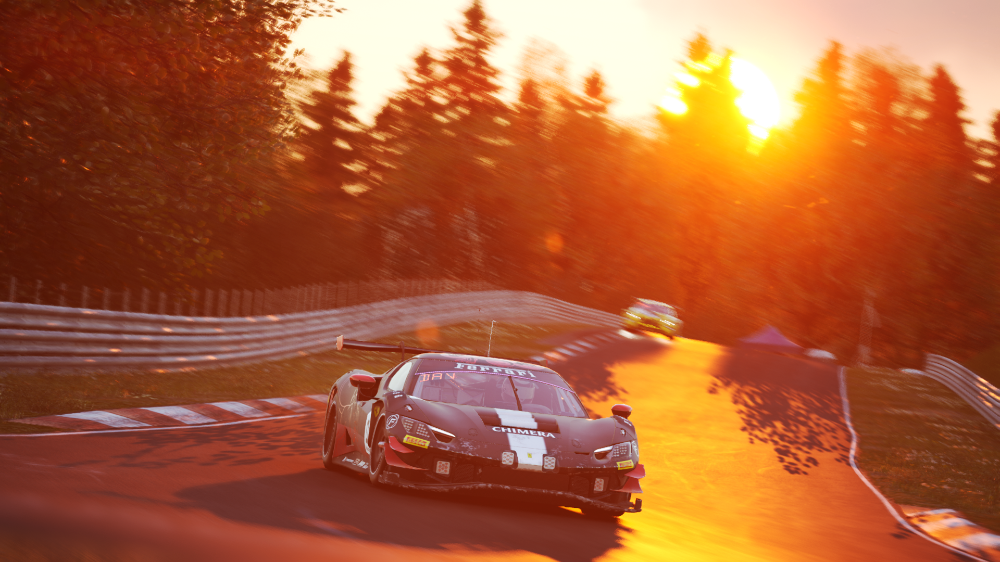 |
| Assetto Corsa Competizione | Mclaren 720s GT3 Evo | 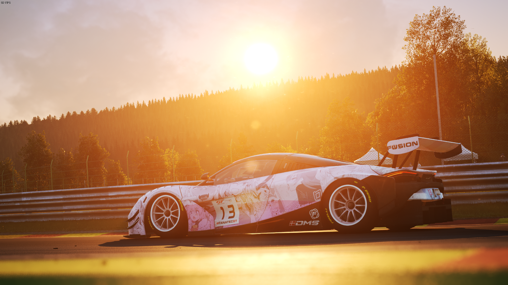 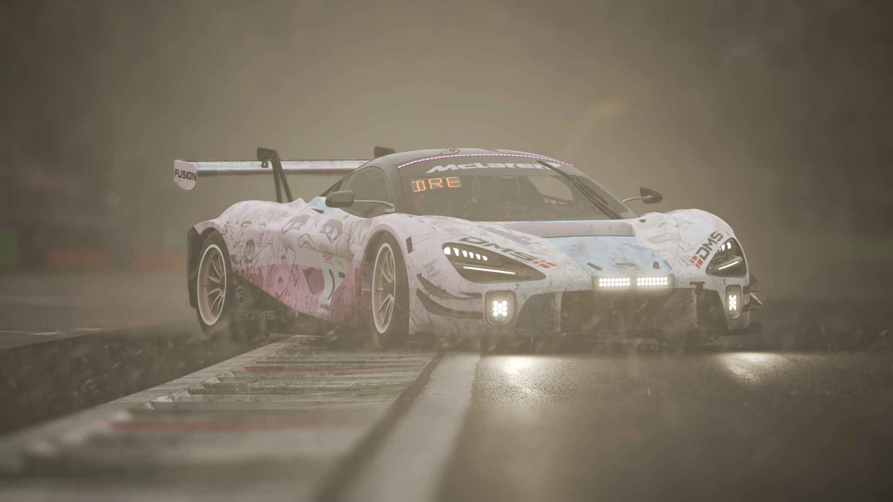 |
| iRacing | Porsche 992R GT3 (Base) | 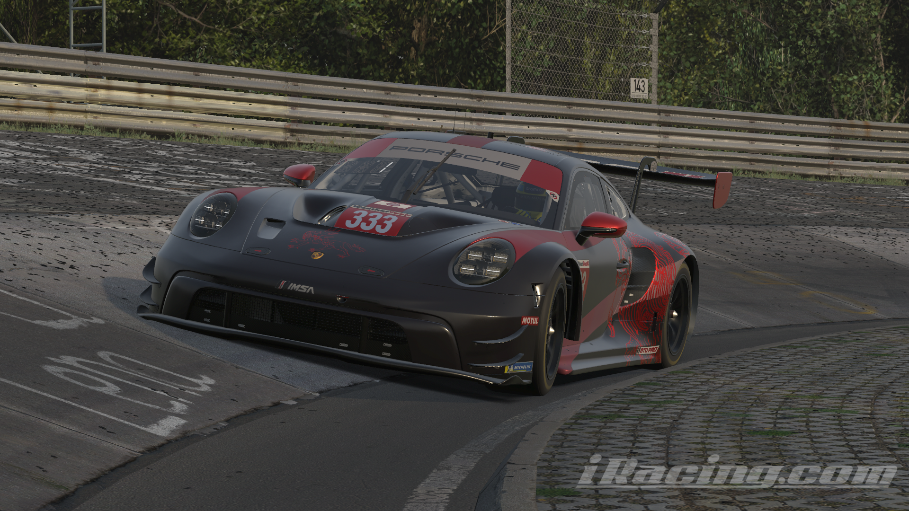 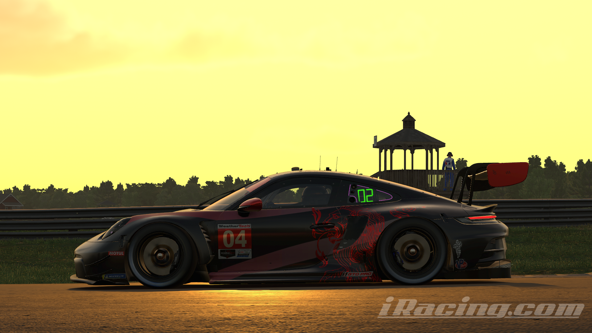 |
| iRacing | Porsche 992R GT3 (Miyabi) | 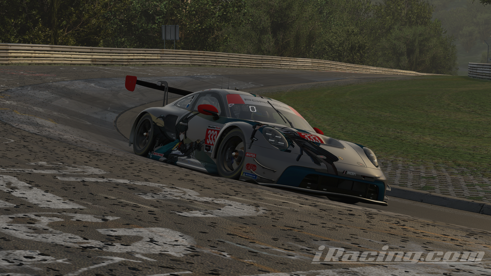 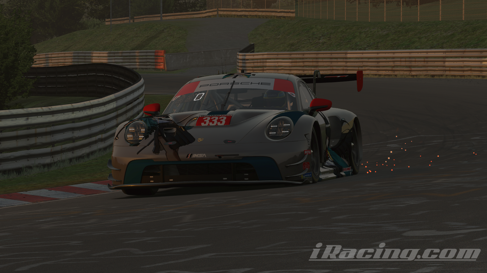 |
| iRacing | Dallara P217 (Base) | 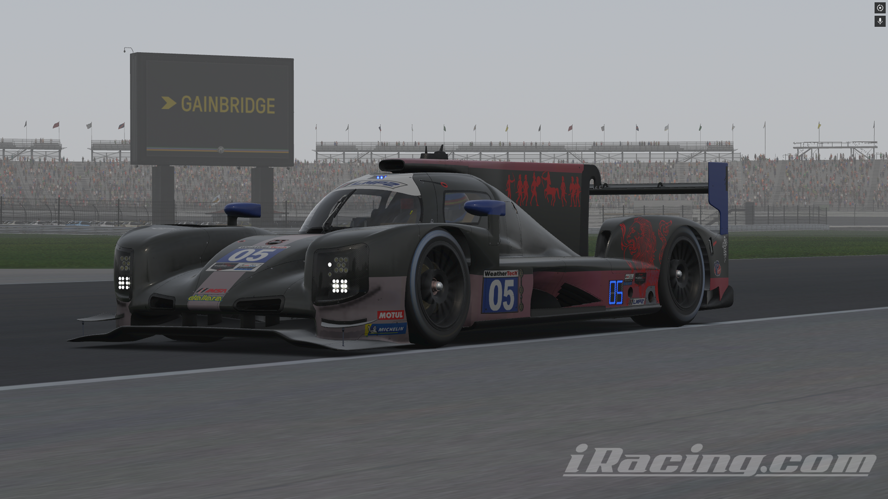 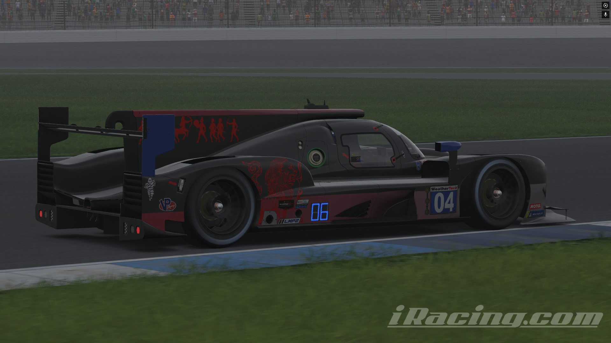 |
| iRacing | Dallara P217 (PLM) | 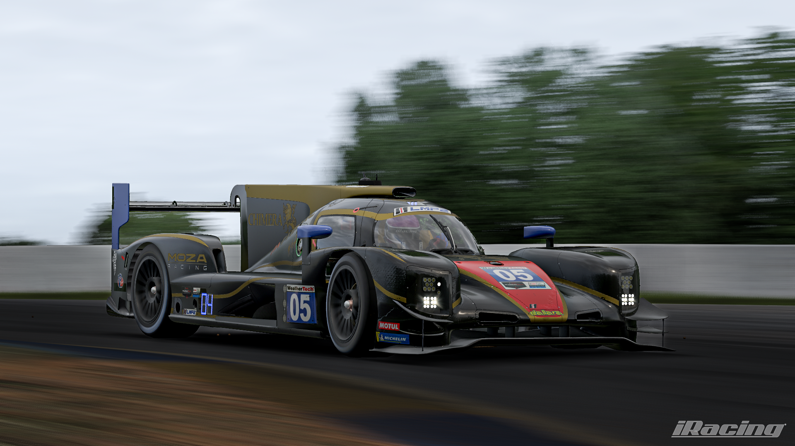 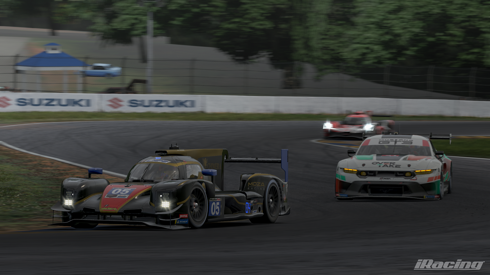 |
| iRacing | Aston Martin GT3 Evo |
 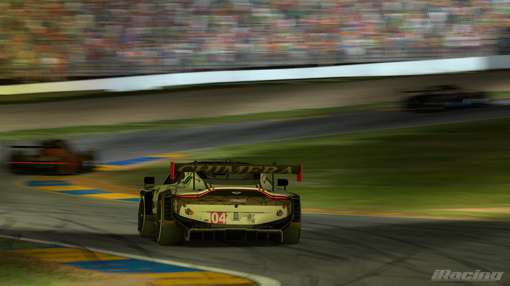
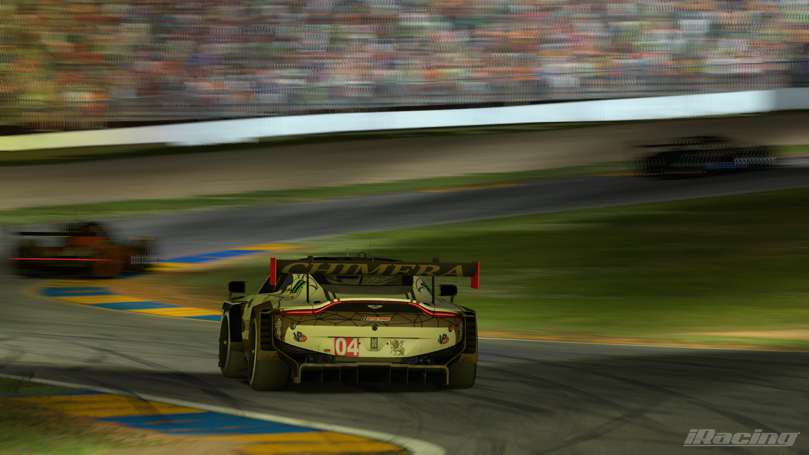
|